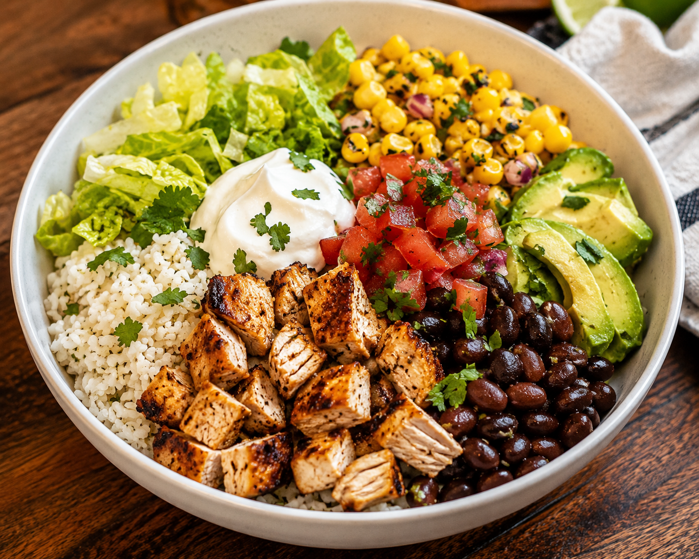

Burrito Bowl

About The Recipe
A quick bowl made with rice, chicken, beans, and a few fresh toppings. It's filling, healthy, and takes about 15 minutes to make.
Ingredients
- 1 cup cooked rice
- 1 cooked chicken breast, diced
- 1 can black beans, drained
- 1 avocado, sliced
- Sour cream
- Taco seasoning
Steps
- Heat the chicken in a pan and sprinkle with taco seasoning.
- Warm the black beans in the microwave.
- Put the rice in a bowl.
- Add the chicken and beans.
- Top with avocado and a spoonful of sour cream.
- Enjoy!